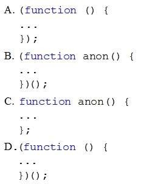

|
You need to write a self-executing anonymous function in JavaScript. Which code snippet should you
include in the function?

A. Option AB. Option B C. Option C D. Option D Correct Answer: D Section: Volume D Explanation Explanation/Reference: References: http://esbueno.noahstokes.com/post/77292606977/self-executing-anonymous-functions-or-how-to-write ExplicaciónEl arte de la función anónima autoejecutable.(function(){ console.log('¡Hola mundo!'); })(); Al observar el código detenidamente veremos que se compone de dos partes clave. // El código normal va aquí }) Esos dos pequeños paréntesis hacen que todo lo contenido en las llaves anteriores se ejecute inmediatamente. Respuesta:Por lo expuesto anteriormente vemos primero que la función es anónima por que no lleva nombre.
Esto elimina las opcionces B y C. Ejecutando el siguiente código en esta página en la correspondiente etiqueta "script" <script>(function (window) { var foo = 'Hello'; var bar = 'World!' function baz() { return foo + ' ' + bar; } //En este contexto, 'window' se refiere a un parametro window.baz = baz; console.log(baz()); // usando la función anónima y visualizando en la consola })(window); //Pasando como referencia el objeto global window </script>
La respuesta visual del script anterior se puede ver en el siguiente parráfo que es cargado dinámimente: Fuentes:http://markdalgleish.com/2011/03/self-executing-anonymous-functions/ |